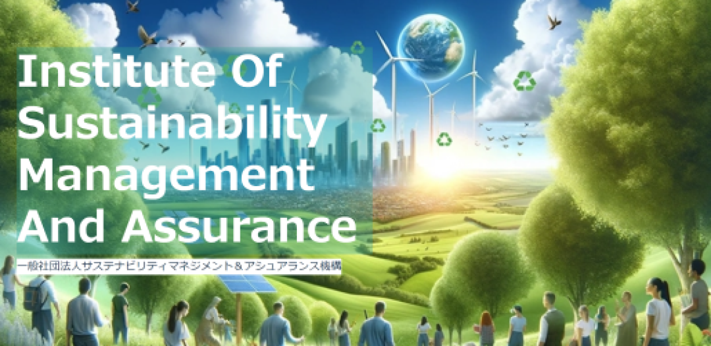

Organization Overview

一般社団法人サステナビリティマネジメント＆アシュアランス機構（i-SMA）は、サステナビリティの経営、資金調達、報告書の開示支援および保証、人材の育成・研修を行っています。
財務・会計とサステナビリティの両面に精通した専門家の育成と、企業が持続可能な経営・開示・保証に取り組むための環境整備を目指して、2024年4月22日（地球の日）に設立されました。
Organization Profile
| 法人名 | 一般社団法人 サステナビリティマネジメント＆アシュアランス機構 |
|---|---|
| 英語名 | Institute of Sustainability Management and Assurance |
| 略称 | i-SMA（アイスマ） |
| 所在地 | 〒150-0021 東京都渋谷区恵比寿西2丁目4番8号 ウィンド恵比寿ビル8階 |
| 代表理事 | 水口 剛 |
| 設立日 | 2024年4月22日（地球の日） |
Business Activities
サステナビリティ分野の専門家・企業をつなぎ、知識共有と協働の場を提供します。
定期的な勉強会・交流会を通じて、実務に役立つ知識の習得をサポートします。
TCFD/TNFD、SSBJ、ISSB、EU CSRD/ESRSなどの開示・保証対応を支援・紹介します。
企業のサステナビリティ課題に応じた専門家・コンサルタントをマッチングします。